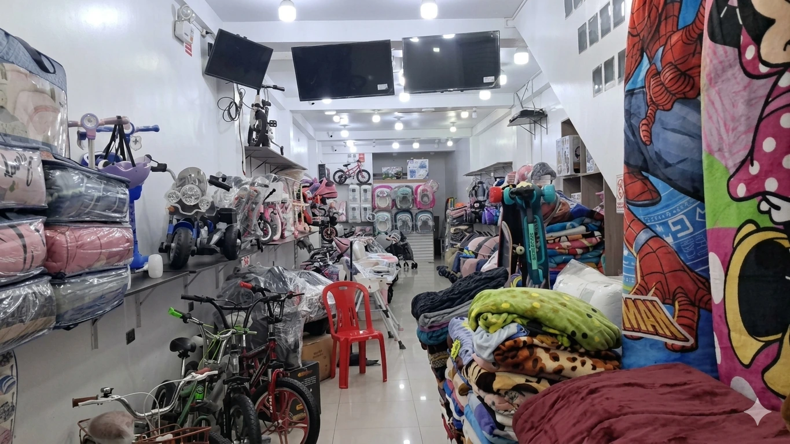

Precios claros
Valores referenciales por modelo y confirmación final por WhatsApp.
Tienda para bebés y niños en Huacho
Bicicletas, carritos a batería, triciclos, coches, scooters, patines, andadores, corrales, mochilas escolares, cobertores y más productos listos para regalar.
Valores referenciales por modelo y confirmación final por WhatsApp.
Te ayudamos a elegir por edad, tamaño, uso y presupuesto.
Encuéntranos en Av. Francisco Rosas 126, cerca del centro.
Catálogo
Selecciona una categoría para ver productos, precios referenciales y opciones para añadir al carrito.
Modelos disponibles
Modelos para diferentes edades, alturas y estilos de uso.
Los precios son referenciales y pueden variar por color, tamaño o stock. El pedido final se confirma por WhatsApp.
Nuestro local
En La Casita del Niño Feliz 2 encuentras regalos, artículos de movilidad, productos para bebé y accesorios escolares. Atendemos a familias de Huacho, Huaura y alrededores.

Datos del local